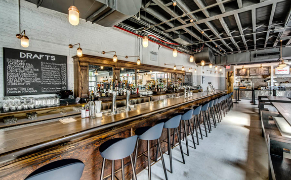
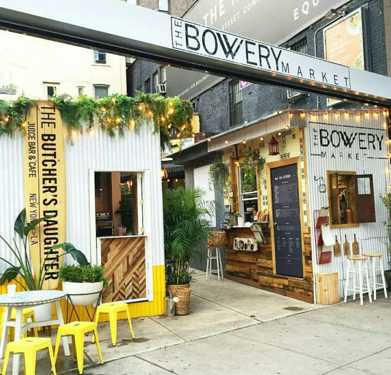
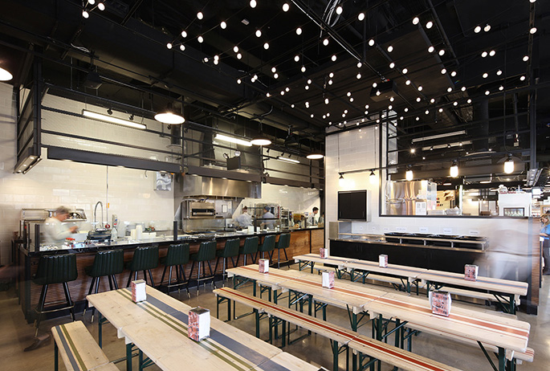
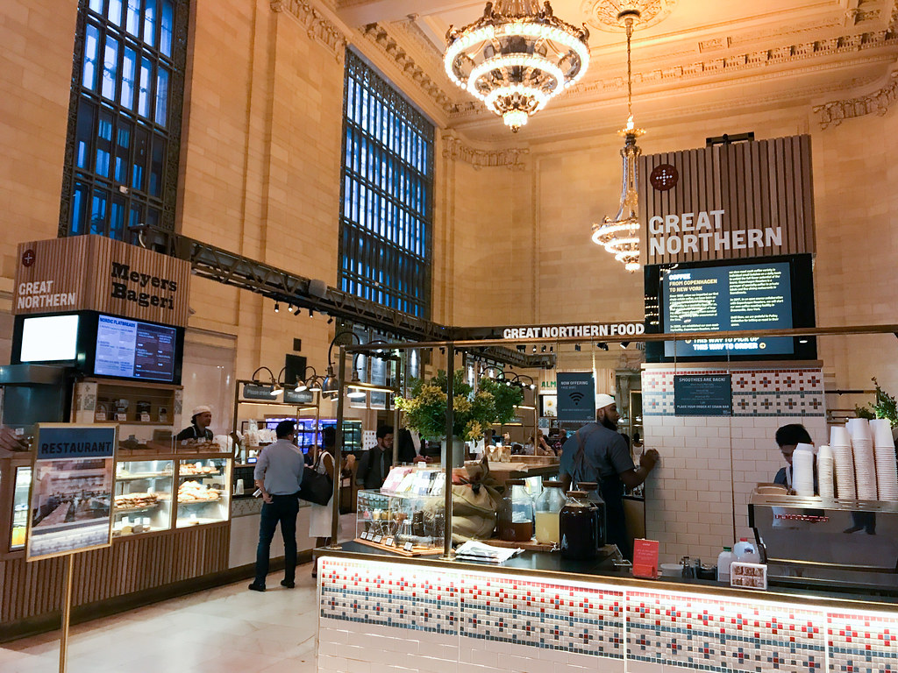
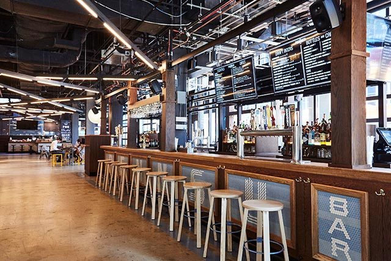

Berg’n, on Bergen Street between Franklin and Classon Avenues, derives its name from an abandoned subway stop, the sign of which is affixed to a steel girder near the bar. On opening day — two years in the planning — the space was burbling with families, neighbors with laptops and workers who had descended from the new “creative” office spaces above at 1000 Dean, formerly a service station for Studebaker cars.
On the border of the East Village and Noho, The Bowery Market is a mini food hall/outdoor market occupying the lot of a former auto body shop. The 1,000sqft space is home to five vendors: Italian sandwich specialist Alidoro, veggie-focused cafe The Butcher's Daughter, Sushi on Jones, Greenpoint-based Champion Coffee, and Pulqueria taqueria. Each vendor has its own kiosk, and seating is limited.
Gotham West Market infused new culinary energy into Hell’s Kitchen and transformed the neighborhood with a stylish and exciting dining, drinking, and hangout destination. This cool, gritty space reminiscent of Hell’s Kitchen’s colorful past has been named “one of the coolest places in New York,” by Complex Magazine, and is the only food hall to receive 2 stars from The New York Times, underscoring the unique combination of quality cuisine and energetic ambiance.
The Great Northern Food Hall brings culinary concepts, flavors and ideas rooted in the history and the landscapes of the Nordic countries. Claus Meyer is the founder of Meyers, which launched many influential restaurants and other food projects in Denmark. He is also co-founder of noma, a Copenhagen restaurant that has four times been rated the best in the world, and he initiated the New Nordic Cuisine Movement. In 2010, he founded the Melting Pot Foundation, because he believes that social change can be driven by food – using the tools of entrepreneurship, education, and deliciousness.
The Pennsy is an innovative chef driven food hall with a large outdoor beer garden next to Madison Square Garden and Penn Station. the PLACE to meet before or after an event or while waiting for your train.
